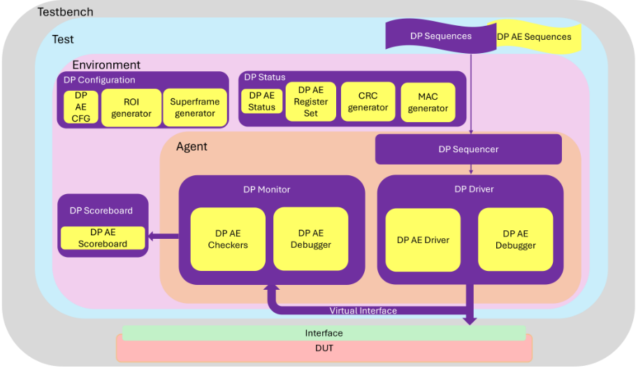
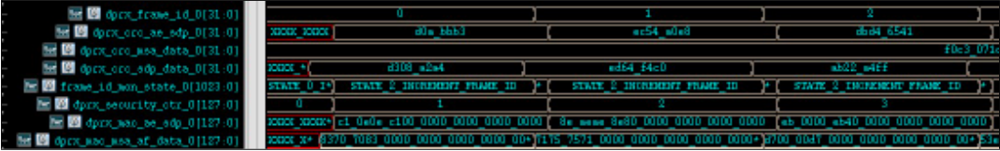
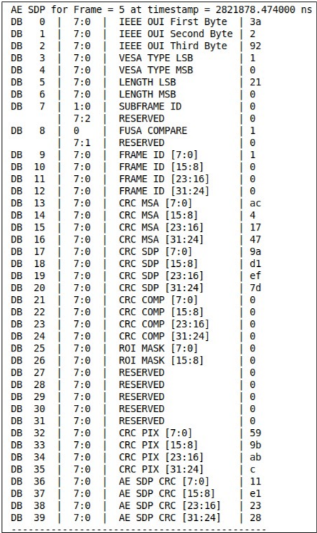

Overcoming the roadblocks in Display Port Automotive Extensions verification
克服 DisplayPort Automotive Extensions 验证中的障碍
简介
现代汽车显示通过 DisplayPort/eDP 传输视频数据，VESA 新发布的 DisplayPort Automotive Extensions (DP AE) 在其上叠加汽车级功能安全 (FuSa) 与安全协议，芯片厂商已开始采用，亟需高效测试平台保障质量与缩短上市时间。论文指出 DP AE 验证的核心难点：场景需要大量帧（如从非 FuSa 保护态到 FuSa 保护态的迁移至少需 4 帧）、32 位翻转帧计数器无法通过直接仿真验证、CRC/MAC 等计算密集模块逐位运算拖慢仿真，此外还有 ROI/Superframe 等复杂特性以及规范持续修订。方法上，作者在既有 DP UVM testbench 上以即插即用方式新增 DP AE 验证块，提供性能优化配置、计数器验证 hooks、逐行 CRC 对比的 debug 端口与 trace 文件，并在场景生成中使用 run time switches 加速覆盖率收敛。结论是已验证过 DP 协议的用户无需任何集成改动即可验证 DP AE，实现更快覆盖率收敛与验证活动提前关闭。
问题
VESA DP AE 在 DP/eDP 的高层协议层新增功能安全与安全机制（AE_SDP、CRC、帧计数、超时监测、ROI、Superframe、AES-GCM MAC、SPDM 认证、aux 消息加密），验证必须注入多种错误并模拟攻击场景以确认设计鲁棒性；同时新 AE 框架需与既有 DP testbench 平滑集成，并覆盖 Source/Sink/Branch 拓扑与 DP/eDP 两种协议。主要挑战是仿真时间过长：状态迁移需多帧、32 位翻转计数器理论上需 2^32 帧、CRC/MAC 逐位运算导致仿真速度下降，且规范持续修订。
方法
在既有 DP testbench 基础上构建 plug-and-play 的 DP AE 测试套件：新增 DP AE 块与既有 DP 块协同工作（Main Link 与 AUX 通道均含加密处理），用户集成方式保持不变；针对仿真效率提供多种性能优化配置（Table 2）；为 32 位帧计数器翻转等无法直接仿真的场景提供验证 hooks；提供逐行/逐帧 CRC 值对比的 debug 端口（如 AE_SRC_DBG 的 UVM_INFO 打印）与 trace 文件等高级调试能力；在场景生成中使用 run time switches 以加速覆盖率收敛。
关键结果
未在论文中说明：正文提及 Table 2 展示不同性能优化配置下的仿真时间差异，但该表具体数值未在提供的正文中给出
定性结论：已用 DP testbench 验证过 DP 协议的用户无需任何集成改动即可验证 DP AE 协议
定性结论：run time switches 帮助实现更快的覆盖率收敛，进而提前关闭 DP AE 验证活动
创新点
区别于从零构建新协议验证环境，本文强调在既有 DP testbench 上以即插即用方式叠加 DP AE 验证能力，使用户集成零改动；并针对 FuSa 类协议验证特有的痛点（帧数敏感的状态迁移、32 位计数器翻转、CRC/MAC 计算密集）给出仿真加速与 hook 方案，是面向 2025 年 7 月刚发布的 DP AE 规范 V1.0 的早期验证方法学工作。
团队参考意义
相关度级别：high
命中能力域：2.4 设计验证方法学 | 2.6 仿真性能与加速器 | 2.7 EDA/验证自动化与 AI 辅助
理由：DisplayPort 协议本身不在团队的存储/互连产品线内，但本文直接命中 2.4 设计验证方法学（UVM 平台构建、覆盖率驱动验证、debug 方法学）与 2.6 仿真性能（仿真加速）的核心技术，并体现 2.7 的可复用验证 IP 思路。其'在既有协议 testbench 上即插即用扩展新协议版本'的复用模式，与团队 LPDDR4→LPDDR5X→LPDDR6、UCIe 版本演进的验证场景高度同构；帧计数器 hook、CRC/MAC 计算优化、run time switch 加速覆盖率收敛等手段可迁移到存储/互连协议验证（LPDDR/DDR5/HBM 同样依赖 CRC 校验，UCIe 同样采用 SPDM 与链路安全机制）。
建议动作：作为方法参考存档
中文全文
Overcoming the roadblocks in Display Port Automotive Extensions verification
Thenmozhy Kaliyamurthy，首席工程师，Synopsys India Pvt Ltd（thenu@synopsys.com）
Meenakshy Ramachandran，高级主任工程师，Synopsys India Pvt Ltd（meenakshy.ramachandran@synopsys.com）
Pankaj Sharma，高级经理，Synopsys India Pvt Ltd（pankajs@synopsys.com）
Nusrat Ali，高级总监，Synopsys India Pvt Ltd（nusrat@synopsys.com）
摘要 - 现代车载显示器使用 DisplayPort（DP）或嵌入式 DisplayPort（eDP）将视频数据从中央 CPU 传输至显示器。VESA 的 DisplayPort 汽车扩展（DP AE）协议在现有 DP 和 eDP 标准的基础上增加了车规级功能安全与信息安全。芯片制造商已经开始采用 DP AE 来设计将成为未来汽车组成部分的芯片组。因此，便产生了对经过优化的验证平台（testbench）的需求，以确保产品质量并缩短上市时间。本文讨论了通过利用现有 DP 验证平台来构建可扩展验证平台、从而缓解 DP AE 验证挑战的方法。关键词 - DisplayPort 汽车扩展（DP AE）、车载显示器、功能安全（FuSa）、信息安全、
testbench, verification
随着数字化前所未有的进步，车载显示器已成为驾驶员与车辆之间的关键接口。这些显示器提供大量信息，包括导航、信息、信息娱乐、驾驶员辅助系统等。随着对更大尺寸、更高分辨率车载显示器需求的增长，DisplayPort（DP）凭借其高带宽以及对多流传输（Multi-Stream Transport，MST）特性（可将多个显示器连接到单个 DP 源端口）的支持，成为向显示器传输视频数据的无可争议之选。VESA 新推出的 DisplayPort 汽车扩展（DisplayPort Automotive Extensions，DP AE）规范协议在现有 DisplayPort（DP）和嵌入式 DisplayPort（eDP）标准的基础上，增加了车规级功能安全（FuSa）协议和信息安全协议。该协议遵循 ISO26262——汽车行业功能安全领域的国际标准。DP AE 确保来自车载显示器的关键信息的功能安全与信息安全。它支持四种配置档位（configuration profile），从基础档位到高级档位，如表 1 所列。基础功能安全档位对每个视频帧执行循环冗余校验（Cyclic Redundancy Check，CRC），可检测帧丢失或帧重复。更高级的档位是可选的，但仍被强烈推荐。它们为命令与控制数据通道提供功能安全。此外，它们还支持对命令与控制通道消息进行加密，以防止黑客读取和篡改任何与显示器相关的信息。为确保与旧式 DP 和 eDP 系统的后向兼容性，DP AE 带来的变更仅限于：一种称为 AE_SDP 的新型辅助数据包（Secondary Data Packet，SDP）、一组新的寄存器定义、新类型的 aux client 消息，以及在 aux client 消息之上的一层安全层。它使用 CRC 检测数据传输错误，使用帧计数器技术检测帧丢失，并使用超时监测来检测冻结或丢失的帧。它还引入了感兴趣区域（Regions-of-Interest，ROI）和超级帧（Superframe）等特性，以增强活动帧的功能安全。由 AES-GCM 生成并校验的消息认证码（MAC）用于保障帧和 DP_AUX 消息的数据完整性。它提供了软故障恢复和硬故障升级的机制。它支持安全协议与数据模型（Security Protocol & Data Model，SPDM）认证，以在设备之间建立安全链路。
DP AE CONFIGURATION PROFILES
| Configuration Profile | Features Supported | Purpose |
|---|---|---|
| Profile 0 Basic FuSa | Basic FuSa support via direct DPCD register access. | Performs cyclic redundancy check (CRC) for every video frame, which can detect frame drops or frame repetition. |
| Profile 1 Basic FuSa | Profile 0 + FuSa for DP_AUX message client 16-bit CRC validation. | Functional safety for the command-and- control data channel. |
| Profile 2 Advanced FuSa (Basic Ctrl Plane Security) | Profile 1 + advanced security for DP_AUX messages. | Encryption of the command-and-control channel messages to prevent hackers from reading and tampering display related information. |
| Profile 3 FuSa with Enhanced Security | Profile 2 + authentication and integrity for VESA data plane. | Prevents unwarranted tampering with the video data or display. |
| Configuration Profile | Features Supported | Purpose |
II. KEY VERIFICATION CHALLENGES
汽车显示屏提供安全关键信息，因此对其验证不可或缺。延迟、丢失或冻结的帧可能危及功能安全，并可能导致灾难性事件。显示屏还应当是安全的，能够抵御网络攻击和网络入侵。需要一个高效的测试平台（testbench）来注入不同的错误并模拟攻击场景，以验证设计的鲁棒性。由于 DP AE 的变更仅限于 DP 的高层协议层，因此应确保将新的 AE 测试平台框架顺利集成到现有的 DP 测试平台中。所创建的每个场景都需要针对 Source、Sink 和 Branch 设备等拓扑进行验证，同时还需要针对 DP 和 eDP 两种协议进行验证。
主要挑战在于缩短此类场景所需的高仿真时间，因为实现这些场景需要大量的帧。例如，至少需要四帧才能观察到从非 FuSa 保护状态到 FuSa 保护状态的一次转换，而要正确地验证系统，需要进行许多次这样的转换。类似地，还存在 32 位宽的回绕（roll over）帧计数器，只能借助特定的钩子（hooks）来验证，因为运行包含 2^32 帧的仿真极不现实。该规范还要求实现循环冗余校验（CRC）和消息认证码（MAC）计算器等计算密集型模块，它们需要对大数据块执行按位运算，从而导致仿真速度下降。此外，该规范还包含感兴趣区域（ROI）和超帧（Superframe）等复杂特性。而且，该规范还在不断修订，以满足行业的动态需求。
所提出的测试平台架构能够有效应对这些挑战，从而实现更快速、更全面的验证。本文还给出了为克服上述挑战而部署所提出技术所取得的结果。
III. ARCHITECTURE
DP AE 测试套件是一个即插即用的环境，包含众多复杂而关键的功能特性，可帮助用户验证设计的功能安全与信息安全。图 1 描述了新的 DP AE 模块如何与现有的 DP 测试平台进行交互。该图针对的是 DP 主链路（Main Link，ML）。类似的改动也适用于 DP AUX 通道，用于对 AUX 客户端消息进行加密。这些模块大致可分为以下几类：
测试平台中已有的 DP 模块
测试平台中新增的 DP AE 模块


IV. APPLICATION
DP AE 验证测试平台将成为验证车载显示器功能安全与信息安全的关键工具。它将有助于确认显示器符合功能安全标准并按预期工作，从而预防事故、挽救生命。它还将有助于尽早识别设计中可能被黑客利用的信息安全薄弱环节。
IV. SUMMARY WITH RESULTS, KEY TAKEAWAYS
DP 测试平台中提出的更新有助于全面且快速地验证 DP AE 规范，因为已经使用 DP 测试平台验证过 DP 协议的用户无需对集成做任何更改即可验证 DP AE 协议。
表 2 展示了 DP AE 测试平台提供的不同性能提升配置下仿真时间的差异：
PERFORMANCE IMPROVING CONFIGURATIONS
| Configuration | Simulation Time (Config Disabled) | Simulation Time (Config Enabled) | Gain |
|---|---|---|---|
| Scaled down frame | 16797s | 553s | 96% |
| Bypass initialization and standard procedures | 487s | 425s | 12% |
| Configuration | Simulation Time (Config Disabled) | Simulation Time (Config Enabled) | Gain |
1 UVM_INF0 svt_dp_tx.sv(2321) @ 1221536.969ns: uvm_test_top.env.source_agent.driver [drive_frames] :AE_SRC_DBG :: pix_crc=73ad1b62 for line=0 in frame=4, ae_pix_crc_prev_valid=0, ae_pix_crc_prev=0 2 UVM_INF0 svt_dp_tx.sv(2321) @ 1253310.425ns: uvm_test_top.env.source_agent.driver [drive_frames] :AE_SRC_DBG :: pix_crc=655db79b for line=1 in frame=4, ae_pix_crc_prev_valid=1, ae_pix_crc_prev=73ad1b62 3 UVM_INF0 svt_dp_tx.sv(2321) @ 1285083.881ns: uvm_test_top.env.source_agent.driver [drive_frames] :AE_SRC_DBG :: pix_crc=7d3cbc22 for line=2 in frame=4, ae_pix_crc_prev_valid=1, ae_pix_crc_prev=655db79b 4 UVM_INF0 svt_dp_tx.sv(2321) @ 1316857.337ns: uvm_test_top.env.source_agent.driver [drive_frames] :AE_SRC_DBG :: pix_crc=e8188d48 for line=3 in frame=4, ae_pix_crc_prev_valid=1, ae_pix_crc_prev=7d3cbc22 5 UVM_INF0 svt_dp_tx.sv(2321) @ 1348630.793ns: uvm_test_top.env.source_agent.driver [drive_frames] :AE_SRC_DBG :: pix_crc=82e971d0 for line=4 in frame=4, ae_pix_crc_prev_valid=1, ae_pix_crc_prev=e8188d48 6 UVM_INF0 svt_dp_tx.sv(2321) @ 1380404.249ns: uvm_test_top.env.source_agent.driver [drive_frames] :AE_SRC_DBG :: pix_crc=7939c234 for line=5 in frame=4, ae_pix_crc_prev_valid=1, ae_pix_crc_prev=82e971d0
1 UVM_INF0 svt_dp_rx.sv(22202) @ 1253333.848ns: uvm_test_top.env.sink_agent.monitor [calculate_crc_pixels] Stream_0:Line 4, Active line 0, Frame 4, dprx_crc_pixels[0] = 0x73ad1b62 2 UVM_INF0 svt_dp_rx.sv(22202) @ 1285107.304ns: uvm_test_top.env.sink_agent.monitor [calculate_crc_pixels] Stream_0:Line 5, Active line 1, Frame 4, dprx_crc_pixels[0] = 0x655db79b 3 UVM_INF0 svt_dp_rx.sv(22202) @ 1316880.760ns: uvm_test_top.env.sink_agent.monitor [calculate_crc_pixels] Stream_0:Line 6, Active line 2, Frame 4, dprx_crc_pixels[0] = 0x7d3cbc22 4 UVM_INF0 svt_dp_rx.sv(22202) @ 1348654.216ns: uvm_test_top.env.sink _agent.monitor [calculate_crc_pixels] Stream_0:Line 7, Active line 3, Frame 4, dprx_crc_pixels[0] = 0xe8188d48 5 UVM_INF0 svt_dp_rx.sv(22202) @ 1380427.672ns: uvm_test_top.env.sink_agent.monitor [calculate_crc_pixels] Stream_0:Line 8, Active line 4, Frame 4, dprx_crc_pixels[0] = 0x82e971d0 ' : t (ps . Frame 4, Final dprx_crc_pixels[0] = 0x7939c234



IV. CONCLUSION
在本文中，我们展示了通过增强现有 DP 测试平台来开发 DP AE 测试平台的系统化方法。我们还演示了多种加速仿真的策略。先进的调试能力帮助我们专注于真正的目标，即挖掘设计中可能危及功能安全与信息安全的关键缺陷。场景生成中使用的运行时开关帮助我们更快地实现覆盖率收敛，进而促成了 DP AE 验证活动的提前完成。
参考文献 [1] www.vesa.org, 'VESA DisplayPort (DP) Automotive Extension Services,' Version 1.0, July 24, 2025. [2] www.vesa.org, 'VESA DisplayPort (DP) Standard', Version 2.1a, 18 December 2023. [3] www.vesa.org, 'VESA Embedded DisplayPort (eDP) Standard', Version 1.5a, February 27, 2023.